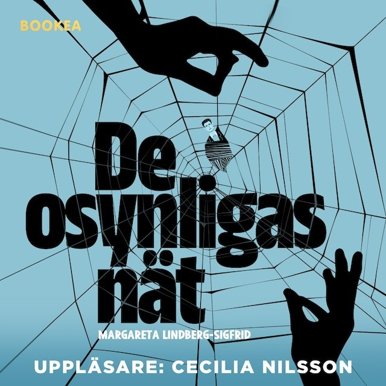

|
Startsidan
Böcker
Dramatik
Kultur-/barnprojekt
Margareta Lindberg Sigfrid |
|

2023 |
|
Efter ett långt arbetsliv som hushållerska ställs plötsligt 63-åriga Hanna Persson utan arbete och bostad. Det finns inte några pensionsinbetalningar att falla tillbaka på och Hanna flyr till sin syster i Stockholm. Hennes räddning blir ”De osynligas nät” – en organisation av äldre damer som stöttar kvinnor som svikits och bedragits av samvetslösa män.
Hannas fall är ett av de svåraste de stött på, men de uppfinningsrika damerna har en idé. Den är djärv. Den är självsvåldig. Den är drastisk... men den kan fungera!
”De osynligas nät” är en fartfylld och charmig feelgood med ett djup som berör. En bok om kvinnokraft, kärlek och drömmar. Boken finns bl.a. hos Storytel , Bokus och Adlibris |